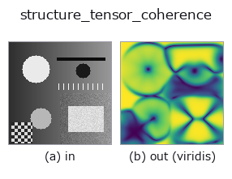

texture op• Data kinds: image → image
• Call: fullseye.apply(img, "structure_tensor_coherence", a=0.5, b=0.5) (the 2-D model is one image plus two scalar knobs a,b∈[0,1])

*The figure is the actual output on a synthetic 128×128 input. Left: input, right: output. Point clouds are drawn as a top-down scatter (brightness = z), 1-D series as a line plot, volumes as the maximum-intensity projection along z, videos as the middle frame, complex images as magnitude; return values that are not pictures are shown as the values themselves.*
*The output is shown in a viridis-like pseudo-colour (dark purple = low, yellow = high) so that a field of quantities — distance, phase, orientation, depth — can be read.*
Sweeping knob a (0.1 / 0.5 / 0.9, the other knob at its default):
▸ structure_tensor_coherence: knob a sweep (docs site)
Sweeping knob b (0.1 / 0.5 / 0.9, the other knob at its default):
▸ structure_tensor_coherence: knob b sweep (docs site)
On other images (synthetic scene / photo / coins. Top row: inputs, bottom row: their outputs. Knobs at default):
▸ structure_tensor_coherence: other inputs (docs site)
*The 4th column is a colour (H,W,3) input. This op handles colour without crossing channels (it does not convolve the colour channel as a third spatial axis).*
> This operator's description has not been translated yet. The original text follows as it is.
局所の向きの揃い具合(構造テンソルの異方度)を `[0,1]` で返す。
`(lambda1 - lambda2) / (lambda1 + lambda2) そのもの。1` は完全に一方向(理想的な縞)、
`0 は等方(平坦面・白色雑音・十字の交点)。a/b` は
`structure_tensor_orientation` と同じ 2 つのスケール。
**`structure_tensor_orientation` と対で使う**: 向きの図は全画素に値が入るので、
向きが意味を持たない所も色がつく。この op を重みにして初めて「どこの向きを信じてよいか」
が分かる。
適用条件と既知の落とし穴: (1) `b`(積分窓)が小さすぎるとテンソルの階数が 1 に
落ちてどこでも 1 に貼りつく —— 揃っているのではなく測れていない。(2) 2 方向が
同じ強さで交差する所(織物の交点・格子)では `0` に落ちる —— 「構造が無い」のでは
なく「向きが 1 つに決まらない」で、平坦面と区別できない。区別したいときは
`local_std` を併記する。
跡が全画像最大の `1e-6 を下回る画素は 0` を返す(平坦面)。HALCON に対応する
単体 op は無い。
• gallery2d_texture_freq family guide
• Sample-data catalog (download URLs / licences) — 2-D uses skimage.data (BSD/public domain) plus synthetic images; 3-D lists download URLs for real data sources (Stanford, PDS, …).
• Operator provenance and references — the sources of the research/methods this op family came from.
• The canonical algorithm (author, year) and its uses are named in the family usage guide above.
The program below has been verified to run (same input as the figure). In Studio's help this block becomes buttons that load and run it on the spot.
structure_tensor_coherence 0.50 0.50
▸ Load this pipeline · Load & run
• gallery2d_texture_freq — py -3.11 examples/gallery2d_texture_freq.py
image as input)identity · gaussian · mean_box · bilateral · unsharp · median · min_filter · max_filter
texture)std_filter · local_std · scale_select_std · bootstrap_std_error · structure_tensor_orientation · gabor · sk_frangi · sk_meijering
*Provenance: ops.py — 2D operator registry. This per-op note is generated by tools/opdocs.py md (do not hand-edit).*
© 2026 Kazufumi Furuse — Fullseye operator documentation. Licensed under Apache-2.0.
{kind=link}
{kind=link}
{kind=link}